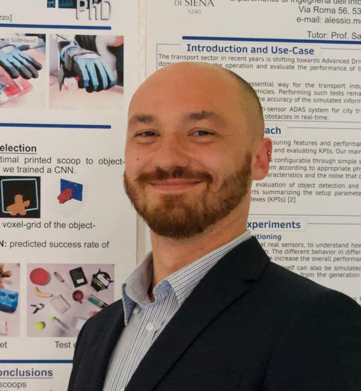

Bridging the gap between Soft Robotics and Socially-Aware Interaction.
I am a Postdoctoral Researcher at the Institut de Robòtica i Informàtica Industrial (IRI, CSIC-UPC). My research develops intelligent systems for Human-Robot Interaction (HRI), social navigation, and autonomous manipulation. I bridge the gap between low-level mechanical intelligence and high-level social awareness, focusing on multimodal perception and proactive decision-making.
I earned my Ph.D. in Robotics from the University of Siena and the Istituto Italiano di Tecnologia (IIT) in 2023. My doctoral work pioneered data-driven design for soft robotic hands with embedded rigid constraints, enhancing versatility through embodied intelligence.
My scientific contributions include over 15 peer-reviewed publications in flagship venues like IEEE RA-L, ICRA, and IROS, with more than 130 citations to date. I serve as a researcher member in several Horizon Europe projects (TORNADO, REGO, MAGICIAN).
Beyond research, I am an active mentor and winner of the Robotic Grasping and Manipulation Competition at ICRA 2024.